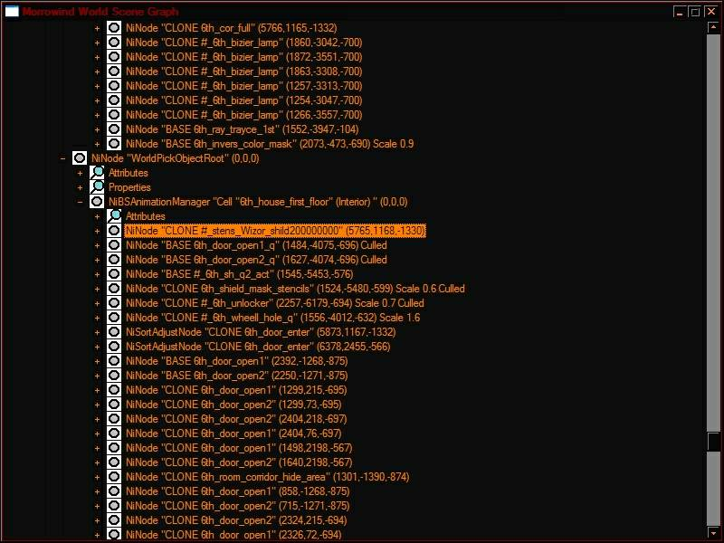
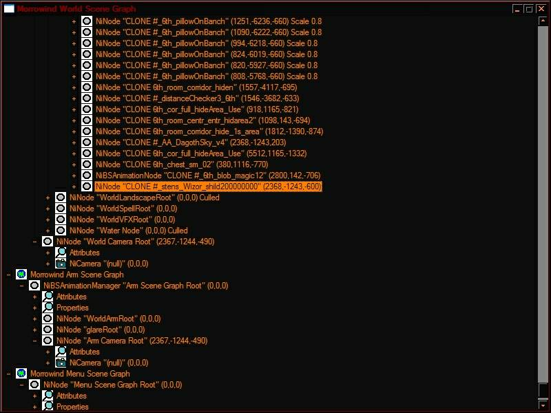

NiStencilProperty примечания
Термины:
Монитор - поверхность на которой изображаются другие (обычно это "скрытые") объекты.
Монитор, как правило использует значение Stencil Function = TEST_ALWAYS.
Т.е. рисуется всегда и без каких либо дополнительных условий.
Монитор, всегда (должен) находится выше (по графику сцены) тех объектов, что отображаются на нем.
Т.е. выше "картинок".
Скрытый объект/картинка - целевой объект который должен взаимодействовать с "монитором" и быть невидимым во всех прочих случаях.
Либо наоборот, объект видим в обычном режиме, но скрывается попав на монитор.
Т.е. это нода, или шейп, с каким либо условием для рисования (на "мониторе").
Как правило со значением Stencil Function = TEST_EQUAL (или NOT_EQUAL).
Простой режим работы свойств трафарета - отображение текстуры с двух сторон поверхности. Draw Mode = DRAW_BOTH
Обычный режим - то что всегда перед глазами игрока. Т.е. обычные объекты без каких либо "хитрых" настроек.
ПРИМЕЧАНИЕ!
Для ОпенМВ (все билды) (0.51 включительно)!
Stencil Ref не должно превышать 255!
Т.е. установка значения выше 255 приводит к отказу в обслуживании, модель перестает правильно работать.
Capo(strоhic) из команды ОпенМВ, писал; это завязано на ограничение OpenGl и (по видимости) не может быть расширено.
Также!
Нифскоп линейки 2.0 (по видимости) выставляет значение:
Stencil Mask = 0, а не 4294967295 (-1)
Что также может приводить к нарушению работы моделей под OpenMW движком!
Т.е. если планируется создавать модель под ОпенМВ не устанавливайте Stencil Ref выше 255 и проверяйте значение Stencil Mask, оно должно равняться минус один (-1), а не быть равным нулю (=0).
Для Ванильного Морровинда, значение Stencil Ref может принимать любое значение до 65535, а Stencil Ref может быть равным нулю.
Хотя, если не планируется использовать какие-то особенно сложные техники, сохраняйте значение, как равное -1 (4294967295).
Примечание.
Свойства трафарета добавленные в локальные сетки могут начать взаимодействовать друг с другом!
Т.е. если в сцене есть несколько разных моделей со схожими настройками стенсил свойств, они могут начать работать друг с другом.
А если в сцене есть несколько одинаковых моделей с одинаковыми свойствами - они точно будут реагировать друг на друга!
Т.е. можно увидеть такие модели даже сквозь стены.
Здесь стенсилы добавлены в частицы и поверхность основания жаровни, с целью запретить их рисование НА ее поверхности.
Обратите внимание, что передний ее край не перекрывается частицами!
Т.е. эта цель была достигнута.
НО!
Другая жаровня проделывает в частицах еще одну, уже лишнюю, "дырочку".
Возможно ЛодНоды могут отчасти помочь, но не во всех случаях.
Примечание.
Для решения этой проблемы (см. выше жаровню) в ряде случаев, может помочь, добавление трафаретов в прочие модели локации.
Так чтобы происходило взаимное перекрытие объектов, "защищая" одни цели, от других.
Примечание.
В экстерьерах, свойства трафарета получают большие проблемы!
т.е. правильно и хорошо работающая в интерьере модель перестает нормально работать.
Все дело в воде.
(точнее в пиксельных шейдерах, т.е. если они включены выплывают проблемы с водой, если выключены модель работает исправно)
Поверхность воды, также имеет свойства трафарета, при этом, одно их них = INCREMENT, т.е. работает на повышение.
Что и оказывает влияние на ВСЕ прочие трафареты в сцене!
Т.е. если такой объект оказывается на "фоне" воды, он может перестать отображаться.
Т.к. изменяется значение триггерного числа и как следствие, меняются условия отрисовки объекта на "мониторе".
Но стоит сменить ракурс камеры, как он снова начинает нормально работать.
Это приходится учитывать при создании объектов на вроде оружия, брони и пр.
Отчасти, это можно исправить через МВСЕ.
Перемещая воду, выше по графику сцену, где она перестанет влиять на локальные файлы.
Т.к. как отмечалось выше, порядок объектов в сцене - крайне важен!
Примечание.
Проблему с водой, можно (по крайней мере от части и в большинстве случаев) решать, через добавление (в ниф файл) поверхности "фильтра".
Т.е. шейпа с определенными настройками трафаретов, которые будут обнулять действие трафарета воды!
Такой шейп, должен находится перед (до)(вокруг) основных объектов с трафарета в файле.
Собственно скриншот с настройками.
Где Action установлены в zero, что и приводит к обнулению значения в буфере трафарета, прежде чем, оное будет записано целевыми значениями от объектов которые предполагается использовать!
Отчего, "фильтр" и должен находится "перед" целевыми объектами.
Значение Draw Mode может меняться в зависимости от ситуации использования фильтра (если не помогло DRAW_BOTH установить иное).
Примечание.
Тут следует заметить, что свойства трафарета активны в воде всегда, но только включение шейдеров приводит к проблемам.
Вероятно, шейдеры, вносят дополнительные значения либо к самим трафаретам воды, либо к z-буферизации.
Примечание.
При, активации шейдеров, отмечается разница в поведении оружия (светильников и щитов) использующего трафареты.
От 1го и 3его лица - оно может отличаться.
Т.к. файл 3его лица помещается в сцену вместе со всеми прочими объектами и не имеет дополнительных z-буферов.
Но файл 1го лица, имеет дополнительный z-буфер, который оказывает свое влияние!
|
|
|
|
В качестве примера.
Ореол от основания лезвия не должен рисовать на рукоятке.
И в помещении все прекрасно!
|
Но вот в кадре появилась вода и ...
Да, вода в интерьерах также негативно сказывается на моделях.
Впрочем, в итоге, это получилось "забороть", хотя бы отчасти.
Т.е. даже с шейдерами и водой, модель можно настроить на нормальную работу.
|
|
|
|
|
Настройки позволяют работать нормально даже на фоне воды.
А равно создавать свечение вокруг основного лезвия.
Это тоже заслуга буфера трафарета!
И никакой пляски полигонов конечно.
|
Но вот от 3его лица, ситуация уже немного иная.
Впрочем, финальный результат получился лучше того, что на этом скриншоте.
Т.е. z-буфера и свойства трафарета, имеют значительное кол-во комбинаций, которые могут приводить, как; к чему-то интересному, так и к головной боли (ничего не работает как было задумано).
А еще, всегда проверяйте модель (сначала) в ванильном МВ!
Т.е. что работает в Ванили, может не сработать в ОпенМВ, равно и обратное.
Ваниль - фундамент!
А ОпенМВ - может меняться свое поведение от сборки к сборке!
|
Примечание.
Похоже свойства трафарета, совершенно, не хотят правильно работать от 1го лица!
Т.е. если (например) в модель щита добавить эти свойства и задать им взаимодействие с каким-то другим объектом в мире.
Например, чтобы некое существо, было видно только через этот щит.
Увы, это на сработает когда игрок смотри через щит от 1го лица.
Если исхитрится и посмотреть от 3-его, то все отображается нормально.
Вероятно все дело в организации файла 1го лица, который работает всегда "вне мира".
Т.е. имеет настройки предотвращающие проваливание рук и оружия сквозь текстуры объектов, когда игрок упирается в них "носом" (камерой).
Но это также помещает 1ст вид выше (или ниже) всех прочих графиков сцены, что и не позволяет им нормально взаимодействовать.
Собственно, 1ст файл, имеет настройки z-буфера "пробивающие" все прочие объекты сцены.
Возможно, МВСЕ и ОпМв могли бы помочь с решением этой задачки.
Т.е. ОпенМВ не имеет такой проблемы (как кажется).
А в ванили, потребуется (неизвестного уровня) колдунство с МВСЕ (не проверялось).
|
|
|
|
Щит и стул.
Который видно только на фоне щита.
|
И вид от 1го лица, где стула уже не видно -_-
И "забороть" это дело получилось только костылями, добавляя рядом с игроком существо в качестве мобильного щита.
На фоне которого уже можно видеть другие объекты.
|
|
|
|
|
Когда щит выложен в мир, на нем все хорошо видно...
|
Черный фрагмент в центре, это все тот же стул.
Только теперь его видно от 1го лица.
Т.к. рядом с игроком находится невидимая сфера, которая делает видимыми ранее невидимое.
Конечно, вариант с щитом, был бы вкуснее...
|
Кто-то писал:
Morrowind renders the arm scenegraph last, clearing Z buffer and stencil before rendering it.
It uses the same camera setup as the world scene.
MGE does all depth buffer stuff by re-rendering draw call captures (no multisample resolve in DX9).
The arm scenegraph is then treated like all other rendering for depth.
Примечание.
Отчасти баги стенсилов можно исправить через МВСЕ 2.0
Перестроив сцену в нужном порядке.
Т.е. например поместив воды, выше по графику.
Что также избавляет модели от воздействия оной.
Может быть и проблему с "щитом" от 1го лица, можно решить этим способом.
Не уточнялось.
Примечание.
СемКа — Сегодня, в 4:13
@R-Zero спецэффект этого колодца на поверхности земли не работает?
Токо на статиках?
R-Zero — Сегодня, в 4:15
В ванили нет, но есть мод для МВСЕ чтоб работал
там меняется порядок отрисовки немного
в состав ОААВ входит тоже
СемКа — Сегодня, в 4:17
На ОМШ сейчас попробовал, работает везде. Раньше вообще не работало.
R-Zero — Сегодня, в 4:18
ну значит в орехе сделали сразу правильный порядок
СемКа — Сегодня, в 4:18
Понятно.
Т.е. при проблемах объектов со свойствами трафарета в экстерьерах можно использовать ЛУА скрипты, в т.ч. входящие в состав OAAB плагина.
(а в ряде случаев, поможет создание "фильтра" в самом ниф файле! Но не везде, а только там, где проблемы возникают от наложения различных свойств трафарета друг на друга из разных ниф файлов (либо поверхности воды).
Примечания.
ТЕС КС отображает эти свойства не совсем корректно.
Т.е. простые случаи с двух сторонним отражением поверхности показываются нормально, но более сложные объекты и их взаимодействия отображаются глючно.
Также, показанное может сильно отличаться от результата в игре!
Для обновления состояния буфера трафарета на объекте, следует слегка подвигать край окна рендеринга редактора.
Т.е. немного масштабировать окно.
Это обновит кадр и как следствие буфера трафаретов.
Однако, "правильный" на вид результат, может не оказаться таким в игре.
Т.к. в сеансе игры, будут учтены и порядок объектов в графике сцены и, их АЙДИ, а еще добавлены z-буфера в графики сцен.
Отчего объекты с трафаретами приходится, по больше части, тестировать в игре сразу.
При этом не забывая посещать локации с водой. Если конечно объект, предполагается к перемещению (например меч).
В редакторе, вода, также оказывает влияние на такие модели!
|
|
|
|
Объект после движение в сцене.
|
Окно редактора было масштабировано.
|
Красное пятно, это маркер.
Сам по себе именно этот объект и не должен быть видимым в игре, но только на фоне другого.
Однако, рендеринг редактора, реагирует на наличие этого буфера и оставляет всякого рода артефакты при перемещении объекта по сцене.
Это нормально для всех объектов со сложными настройками трафарета.
Важно!
Для правильной работы, порядок размещения объектов в сцене критически важен!
Термины см. здесь.
Объекты "мониторы" должны размещаться раньше "скрытых" объектов.
Т.е. в игре и в редакторе, "мониторы", должны размещаться в локации раньше тех объектов, что они показывают.
Также влияет ID объектов. У мониторов оно должно ставить их выше по списку.
Т.е. они должны иметь меньшие "номера", чем ID "скрытых" объектов.
Однако!
Частицы (в случае использования их в качестве отдельной модели помещенной в сцену)
Могут размещаться движком игры НИЖЕ по списку, даже в случае правильного размещения оных в редакторе и правильно установленных ID!
В этом случае, следует совмещать модель частиц (работающих "монитором") с тем, что они должны показывать, в одном файле!
Т.е. все помещаем в один ниф файл.
При этом, соблюдая туже последовательность.
Частицы выше в списке, чем их "картинка".
Пространное примечание - здесь.
Порядком объектов, в сцене игры, можно управлять через ЛУА.
Что позволяет решить ряд проблем.
ВАЖНО!
Критически важно размещение объектов в сцене (в редакторе)!
Т.е. там, где стенсильные свойства разнесены между разными ниф файлами.
Если свойства работают локально (только внутри единого ниф файла) порядок размещение объектов в редакторе, роли не играет!
Объекты работающие "мониторами", т.е. основные поверхности отвечающие за отображение "скрытых" объектов,
ВСЕГДА ДОЛЖНЫ БЫТЬ ПЕРЕД ТЕМИ!
Т.е. в иерархии объектов сцены, они должны быть выше (т.е. загружаться раньше)!
Если "скрываемые" объекты окажутся выше в списке, они не будут отображены.
Порядок иерархии объектов определяется в редакторе.
Через ID объектов и порядок размещения оных в сцене редактора.
"Мониторы" должны быть помещены в локацию раньше "скрываемых" объектов и иметь ID с более ранними номерами!
Т.е. сперва разместить в сцене ВСЕ "мониторы" и только затем размещать "скрытые" объекты.
Аналогично и для игры, если объекты размещаются скриптами.
Сначала "мониторы" и только затем, то что они будут показывать.
Обращайте внимание!
Частицы могут не следовать правильному размещению!
В случае использование раздельный моделей, игра может разместить "мониторные" частицы, после их "картинок".
Для частиц, лучше использовать единый ниф файл.
С "монитором" и его "картинкой".
В особо "тяжелых" случаях, можно использовать скрипты МВСЕ 2.Х которые умеют управлять порядком объектов сцене.
В т.ч. лендскейпа, т.е. "землю" можно также передвигать по иерархии.
Сбой может произойти если добавить в сцену модели с меньшим номером Stencil Ref, чем у уже имеющихся "мониторов"!
Если же, скрипты слишком сложно и модели ни в какую не хотят работать как надо, хотя все настройки явно рабочие;
- склейте обе модели в один файл, в котором создайте правильную иерархию!
"Мониторы" выше по списку, их "изображение" ниже.
Примерно так, как на этом скрине.
Баннер это "монитор".
Статуя это "скрытый" объект который будет виден только на "мониторе".
Порядок загрузки объектов в игре можно посмотреть по SSG. (вызвать консоль и SSG)
В качестве примера


Здесь использовался объект с трафаретом.
При этом, помещаясь в сцену по разному!
В первом случае (если войти в локацию с таким предметом) он загружался в начало графика и работал правильно.
Во втором случае, объект добавлялся непосредственно в ячейке и, помещался в конец графика, отчего переставал работать правильно.
В таком случае, только МВСЕ может помочь, переместив объект обратно в начало графика сцена.
И в редакторе:
|
|
|
|
|
Не правильный порядок!
|
Тоже не правильный!
|
Правильный порядок!
ID и размещение в локации - корректно.
|
В основном критичен порядок помещения объектов в сцену.
Да, именно когда они перетаскиваются мышью.
Те что раньше были добавлены, окажутся в начале списка.
А те что позже, даже не смотря на более низкий номер ID - окажутся ниже.
Для активации простого режима отражения текстуры на обратную сторону полигона достаточно установить:
Stencil Function = TEST_ALWAYS (как ни странно, но для NEVER это тоже работает)
Draw Mode = DRAW_BOTH
Тесты в игре показали, что стенсильные свойства начинают работать сразу при установке этого значения.
Достаточно установить Draw Mode = DRAW_BOTH и все включается...
Впрочем, флаг Stencil Enabled перевести в значении 1.
Это и включает работу трафарета в полном объеме.
Для сложных трафаретов, значение Stencil Enabled должно быть обязательно = 1!
При этом, в игре, нормали поверхности сохраняют оригинальную ориентацию.
Т.е. обратная сторона может выглядеть темнее, чем передняя.
Нифскоп не показывает, видно только в игре и редакторе.
Другой, вариант активации, был подсмотрен в настройках игровой Воды (SSG).
Stencil Enabled = 1
Stencil Function = TEST_GREATER
Pass Action = ACTION_INCREMENT
Однако именно эти настройки воды оказывают негативное влияние на все прочие модели с трафаретами!
Т.е. при прохождении тестов (pass action) стоит значение Increment т.е. идет увеличение значения в буфере, что и нарушает правильную работу.
Для режима TEST_EQUAL в особенности.
Т.к. значение в настройках монитора (см. выше) также повышается!
Было (например) 120 а стало 121, отчего EQUAL (равно) уже не определяет связи и отбрасывается.
Примечание.
По видимости, по крайней мере от части, это можно обойти создав "нейтрализатор".
Т.е. в ниф файле создать дополнительный объект, который будет находится вокруг (или за) целевым объектом, который надо нарисовать через EQUIL функцию. На этот вспомогательный объект разместить свойства трафарета:
Stencil Enabled 1
TEST_NEVER
ACTION_ZERO на всех слотах.
Это обнулит значения трафарета в целом и новые значения будут накладываться на чистый буфер.
И здесь в самом низу страницы.
Примечание.
Стенсильные свойства могут быть, как на корне файла, так и на любом из вложенных узлов (niNode, или niTriShape).
Т.е. как оказывать глобальный эффект на все объекты, так и на отдельные.
Примечание.
Все стенсильные свойства взаимодействуют между собой!
Т.е. можно настроить сцену так, что с одних ракурсов будут видны только одни объекты, с других - другие.
Управляется это через параметр, Stencil Ref - где указывается тригерное число.
Т.е. любое абстрактно взятое число будет работать тригером связи между объектами содержащими Трафарет с тем же числом.
В сочетании с
niCollisionSwitch нодой можно создавать "призрачные" сцены без каких либо скриптов.
Игрок будет видеть, но не будет их "ощущать".
Примечание.
В случае использования разнесенных по разным моделям свойств.
Т.е. "мониторы" и "картинки" разные ниф файлы.
Не рекомендуется размещать в одной локации объекты с разными Stencil Ref !
Т.к. меньшие номера Stencil Ref "мониторов", могут испортить работу моделей с большими номерами в Stencil Ref .
Также следует соблюдать последовательность!
В первую очередь размещая "мониторы" с меньшими номерами.
Затем с большими.
И только после размещения ВСЕХ "мониторов" - размещать их "картинки".
Либо использовать совмещенные модели.
Где "монитор" и его "картинка" находятся в одном ниф файле.
В целом, использование "совмещенных" моделей - предпочтительнее, чем разнесенных.
Примечание.
Последовательность размещения не касается объектов с простыми настройками трафарета.
Т.е. где он использован только для отражения поверхности на другую сторону.
И не имеет никаких настроек взаимодействия трафаретов между собой.
Примечание.
Наличие флага No Sorter для альфа свойств "мониторов" - обязательно!
Для "картинки" - нет. Скрытые объекты могут иметь любые настройки альфы. Или не иметь их.
Т.е. рисовать можно не только по чистой, без текстурной, поверхности, но и по текстурам с учетом их альфа канала!
Примечание.
"Светящиеся" флаги альфы на "мониторах" работают хуже, чем обычные.
Т.е. изображение "картинки" может стать практически не различимым!
Но их можно применять на "картинке".
См. скриншот выше.
Примечание.
Если картинка не содержит
альфа свойств, но занимает весь объем "монитора" - наличие
z-буфера (на частицах) не обязательно.
В некоторых случаях, даже не желательно!
Т.е. приведет к пробитию массива частиц другими объектами с z-буфером (и\или альфа свойствами).
Например самый заметный пример, это модели дверей, которые "пробивают" сквозь частицы.
Чего не происходит, если частицы не используют флаг No Sorter и свойства трафарета.
|
|
|
|
|
Частицы с z-буфером (флаг 1).
Трафарет "картинки" без свойств альфы.
|
Частицы без z-буфера.
Но с альфой (13037) и трафаретом.
Внутри такого массива игрок будет видеть только его текстуру.
|
Частицы без z-буфера.
частицы, содержат альфа свойства.
Флаг 13.
|
|
|
|
|
|
Частицы с z-буфером флаг 1.
Флаг альфы частиц 13037.
"картинка" трафарета имеет флаг альфы 4621.
|
Аналогично, но флаг альфы у "картинки" 1.
"Картинка" с z-буфером флаг 0.
|
Флаг альфы частиц 12813, т.е. "светящийся".
Что не очень положительно сказалось на работе картинки.
|
Примечание.
Стенсильные свойства умеют выборочно блокировать работу
Z-буффера с пробитием через другие объекты (флаг 0 и 2)!
Т.е. управляя этими свойствами можно ограничить отображение такого объекта, только одной, конкретно взятой, поверхностью!
Либо блокировать только одно направления пробития, позволяя свободно "фонить" с другого ракурса.
Можно заблокировать пробитие полностью! Отображая объект только на "мониторе" без дальнейшего пробития объектов.
При этом сам "фонящий" объект может находиться позади любой обычной поверхности не приводя к пробитию оной.
|
|
|
|
Чайник "пробивает" через поверхность своими свойствами z-буфера. (флаг 2)
|
Но невидим в обычном режиме.
Т.е. "фонит" только через свой "монитор".
|
Примечание.
Можно использовать несколько поверхностей с разными настройками трафаретов для скрытия, или отображения объектов с z-буфером 0(2).
Т.е. размещая плоскости одну перед другой можно получить эффект блокировки пробития сцены только на определенной дистанции от целевого объекта.
Т.е. можно как транслировать изображение на один из "мониторов", так и скрывать объект используя второй "монитор" с другими настройками трафарета. Оставляя объект "фонить" через весь мир с другого ракурса.
На скриншоте; сфера, имеет настройки z-буфера 0 и пробивает через всю сцену отображаясь только на нижней плоскости.
Сама по себе она не видна.
Верхняя плоскость полностью скрывает отображение сферы, но сохраняет изображение нижней плоскости.
Примечание.
Использование свойств трафарета позволяет опосредованно добавлять дополнительные анимации к частицам.
Например, можно применить к "картинке
" UV или
Roll контроллеры, или оба контроллера сразу.
И получить звезды перемещающиеся по массиву частиц.
Собственно, это можно видеть на скриншотах вверху.
Примеры этих моделей см. здесь.
@_Notes_for_Modmaking\Additional_Files\Tours\@How_To\NiStencilProperty\MoreAdvanced(Vids+Nifs)\ParticlesWithStens\
Примечание.
Требуется устанавливать дополнительный флаг No Sorter, либо не использовать
смешивание.
niSortAjustNode (флаг 64) может оказывать положительный эффект на работу трафарета и свойств альфы.
Примечание.
Различные комбинации z-буфера, свойств трафарета и альфа свойств, позволяют создавать разнообразнейшие инсталляции.
- объект виден только на поверхности "монитора".
- объект НЕ виден только на "мониторе". Но видим в обычном режиме.
- объект виден на "мониторе" и через любые другие объекты перед монитором.
- объект виден на мониторе, не видим через другие объекты, но виден на другом мониторе за стеной.
- объект частично различим на мониторе, но видим через другие объекты.
- объект видим только на текстуре монитора, но скрыт местами с полной прозрачностью.
- объект инвертирует свою текстуру, за счет текстуры "монитора".
- объект показывает другие объекты своим силуэтом.
- объект взаимодействует с другими объектами в различных комбинациях.
- можно создавать особо сложные объекты с несколькими трафаретами внутри.
Что позволяет настроить отдельные области, где и какая часть модели будет отображаться.
|
|
|
|
Выделенная деталь является монитором.
На котором должны отображаться:
- лава
- стенки колодца.
И то и другое содержит трафареты!
|
В игре, "колодец" размещен под стол, но благодаря z-буферам и трафаретам создает отверстие, в которое видно как лаву, так и стенки колодца. Т.е. совмещение нескольких свойств трафарета позволяют создать сложную комбинацию эффектов.
|
Примечание.
Возможно, флаг z-буфера 0, будет стабильнее, чем флаг 2.
Т.е. модель со свойствами трафарета использующая флаг z-буфера 0, для достижения эффекта пробития через "стену", работает лучше и стабильнее, чем такая же, но с флагом z-буфера 2.
И если в сцене есть модели с флагом 2 и флагом 0, первые могут перестать работать...
Примечание.
О "зеркальной плоскости", тенях и прочем можно найти в руководствах по OpenGl.
Во всех случаях речь идет о написании своего кода с нуля.
https://www.opengl.org/archives/resources/features/StencilTalk/
http://developer.download.nvidia.com/books/HTML/gpugems/gpugems_ch09.html
https://www.opengl.org/archives/resources/code/samples/mjktips/TexShadowReflectLight.html
https://pmg.org.ru/nehe/nehe26.htm
Примечание.
Создание зеркальных поверхностей возможно только опосредовано.
Т.е. потребуется создавать дополнительные объекты находящиеся за поверхностью.
К сожалению, для создания настоящей "зеркальной плоскости" действительно отражающей объекты потребуется вносить изменения в движок. По крайней мере, обратных этому данных не наблюдалось.
Впрочем про правильные реалтаймовые Зеркала см.
тут.
Примечание.
Создание
теней, возможно также только опосредованно.
Т.е. Shadow Volume потребует дополнительно настроенных поверхностей.
https://en.wikipedia.org/wiki/Shadow_volume
Примечание!
К сожалению, добавление трафарета во вложенные модели
теней, или в сами модели, не дало положительного результата!
Т.е. тени для объектов создаются автоматически, без возможности повлиять на них локальными настройками.
Такой эксперимент был проведен. Свойства работали сами по себе, но никак не меняли поведение тени.
Как можно видеть из скриншота выше (
SSG), тени, это отдельный раздел в сцене.
|
|
|
|
Добавление свойств трафарета никак не повлияло на это безобразие в режиме High Detail Shadows.
Т.е. возможно, дело не сколько в полигонах, столько в настройках свойств трафарета для теней в движке.
|
Заранее настроенная тень в модели существа.
Добавление Стенсилов, опять же никак, ни на что, не повлияло.
|
Выразим надежду на МСП, возможно изменение настроек теней по умолчанию, может изменить ситуацию.
Примечание!
Стенсил свойства не отражаются в воде!
Т.е. объекты у которых оболочка имеет только одну "физическую" сторону и свойства трафарета для отображения второй.
Не будут отражать вторую сторону в воде.
Собственно как отмечалось вначале заметки, вода имеет свои свойства трафарета и негативно влияет на трафареты в моделях моделей.
При этом, оные модели воды, создаются на уровне движка.
У них нет внешних ниф файлов.
Равно как и у моделей поверхности земли, солнца и его ореола.
Эти объекты создаются движком.
Т.е. как-то повлиять на назначенные им по умолчанию свойства, можно разве что через МВСЕ.
SiberianCrab
@Hrnchamd Any way to add support of NiStencil for water reflections?
Hrnchamd
@SiberianCrab Double sided rendering is useless in Morrowind because the normals are facing the wrong way half the time, it makes shadows render wrong.
Support would mean doubling faces in the generator.
Примечание.
Свойства трафарета в моделях использующих свойства альфа с флагом No Sorter могут иметь проблемы с отображением на фоне неба.
Как с МГЕ, так и Ванили.
Выдержка из оригинальной справки. (NDL Gamebryo 1.1)
NiStencilProperty enables and disables stencil buffering and sets the pertinent values to configure it. Stencil buffering allows effects such as cutouts in a screen, decal polygons without Z-buffer "aliasing", and advanced effects such as volumetric shadows. This property also includes a draw order (culling) mode setting, which may be used to render a given piece of geometry with or without front or back-facing triangles visible. The draw mode setting is used even if stencil buffering is disabled, so the draw mode may be used for other effects as well.
This default constructor creates a property with the enable flag set to false, the function set to TEST_GREATER, the reference value set to 0, the mask set to 0xFFFFFFFF, the failure action set to ACTION_KEEP, the Z-buffer failure action set to ACTION_KEEP, and the pass action set to ACTION_INCREMENT. The draw mode will be set to DRAW_CCW_OR_BOTH. Descriptions of the test functions, actions and draw modes are included below in the "Notes" section.
(т.е. это объясняет настройки поверхности воды по умолчанию).
Notes
Using the Draw Mode to set Triangle Culling
The draw (culling) mode is functionally independent of the stencil buffering settings. However, since changing the culling mode is commonly used with stencil buffering, it is placed in this property. Note that in general, it should not be used to switch all geometry from "front-CCW" to "front-CW". Gamebryo still prefers geometry to be front-counter-clockwise. The non-default modes are to be used for special effects only. The modes are as follows:
|
Mode
|
Behavior
|
|
DRAW_CCW_OR_BOTH
|
The default. May draw only triangles whose vertices are ordered counter-clockwise with respect to the viewer, or may draw all triangles, regardless of orientation. In the case of closed, opaque objects (which are very common in games), this distinction is irrelevant, as either mode will result in the same rendered image. However, for one-sided translucent or open objects, applications may wish to specify DRAW_CCW.
Note that this mode is equivalent to the way Gamebryo's predecessors have worked in the past. See the particular renderer documentation for notes on how a given platform implements this mode. In general, this mode will be the highest-performance mode across all platforms.
|
|
DRAW_CCW
|
Draw only the triangles whose vertices are ordered counter-clockwise with respect to the viewer.
|
|
DRAW_CW
|
Draw only the triangles whose vertices are ordered clockwise with respect to the viewer.
|
|
DRAW_BOTH
|
Do not cull back faces of any kind. Draw all triangles, regardless of orientation.
|
Test Functions
The NiStencilBufferProperty class supports the following test functions. The action taken as a result of the test depends on the values set in the Action parameters.
|
Function
|
Action
|
|
TEST_NEVER
|
Always false
|
|
TEST_LESS
|
VRef < VBuf
|
|
TEST_EQUAL
|
VRef = VBuf
|
|
TEST_LESSEQUAL
|
VRef <= VBuf
|
|
TEST_GREATER
|
VRef > VBuf
|
|
TEST_NOTEQUAL
|
VRef != VBuf
|
|
TEST_GREATEREQUAL
|
VRef >= VBuf
|
|
TEST_ALWAYS
|
Always true
|
Actions
The actions can be set to occur as a result of the tests.
|
Type
|
Action
|
|
ACTION_KEEP
|
Keep the current value in the stencil buffer.
|
|
ACTION_ZERO
|
Write zero to the current stencil buffer.
|
|
ACTION_REPLACE
|
Write the reference value to the stencil buffer.
|
|
ACTION_INCREMENT
|
Increment the value in the stencil buffer.
|
|
ACTION_DECREMENT
|
Decrement the value in the stencil buffer.
|
|
ACTION_INVERT
|
Bit-wise invert the value in the stencil buffer.
|